【美景】
首都萨格勒布，是巴尔干硬汉铁托的故乡
扎达尔，有“太阳敬礼”和“海风琴”
港口城市斯普利特，有古罗马皇帝先退位后居住的宫殿
世界自然遗产，欧洲的九寨沟——“十六湖”国家公园
【美食】 烤肉+地中海的海鲜+羊奶酪+小众葡萄酒
《孤独星球》曾写道：“如果你的地中海之梦是温暖的天气和古城墙下蓝宝石般的海水，那么克罗地亚就是让你梦想成真的地方。克罗地亚，地处中欧、地中海、巴尔干半岛交汇处，凭借其悠久的历史积淀和丰富的历史古迹，向人们展示着一部完整的欧洲史，乃至世界史。漫步在那些古老的街巷，仿佛穿越时空一样。《权力的游戏》这部奇幻大剧以该地作为外景拍摄地。
具体行程
DAY 1：布达佩斯—萨格勒布
入住地点：萨格勒布
萨格勒布是一个有着悠久历史的城市，是克罗地亚的首都，也是全国最大的城市。人口约792,000，足球强队萨格勒布迪纳摩主场就位于这里。 2017年，它被《孤独星球》评为最佳旅游目的地。这座城市有各种老式的建筑，大大小小的教堂，复古的街道。电车欢乐地在城市里穿梭，让人感觉这里的每一条小巷里都藏着一个美丽的故事。
景点：萨格勒布大教堂
萨格勒布大教堂始建于1094年，天主教堂，是克罗地亚最具有纪念意义的祭典建筑，是萨格勒布大主教区的教堂之母。匈牙利王国统治时期，萨格勒布主教座堂曾被称为圣斯特法诺主教座堂，现正式名称则是圣母蒙召升天主教座堂。入口左右两侧的高塔高105米，是萨格勒布最高的建筑物。
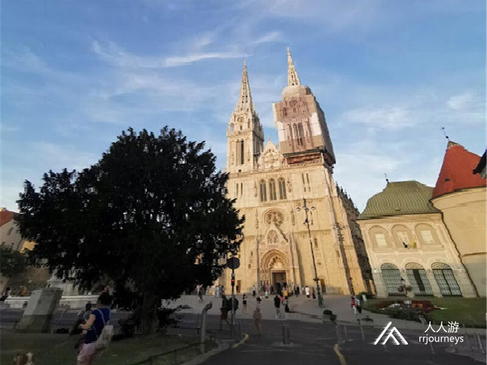
景点：马克西米公园
马克西米公园是克罗地亚首都萨格勒布历史最古老的公园，这座公园设立于1787年，也是东南欧的首座大型公园。
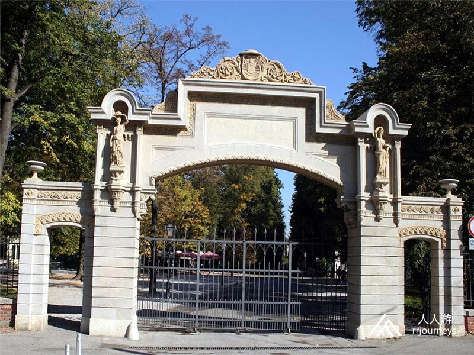
景点：失恋博物馆
萨格勒布的失恋博物馆是爱情记忆的存储站。该失恋博物馆曾获得博物馆界最高荣誉——“欧洲最有创意的博物馆”。
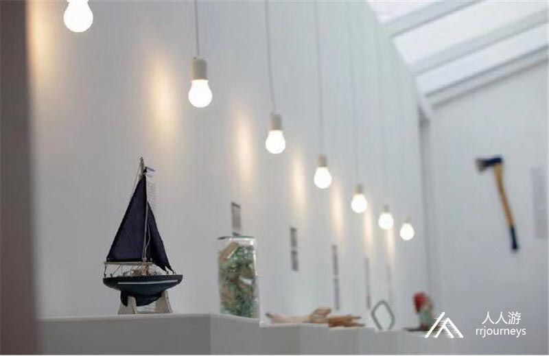
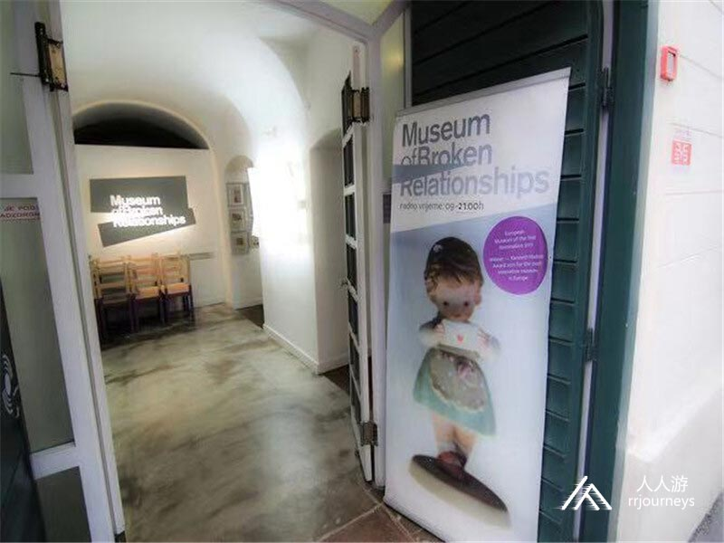
景点：圣马尔谷教堂
圣马尔谷教堂是该市最古老的建筑之一，位于克罗地亚首都圣马可广场的一座罗马天主教的教堂。修建时为罗马式建筑，14世纪时期礼拜堂和拱顶改为哥特式建筑，教堂屋顶上绘有克罗地亚王国和扎格瑞布的徽章。 圣马尔谷教堂独特的彩色瓷砖屋顶，使其成为萨格勒布一道“最靓丽的风景线”，绝对是萨格勒布的标志。
景点：米马拉博物馆
米马拉博物馆是克罗地亚著名的美术馆之一。博物馆开业于1987年，博物馆所在的建筑修建于19世纪。博物馆拥有3,700件藏品，其历史范围横跨史前时代至20世纪。
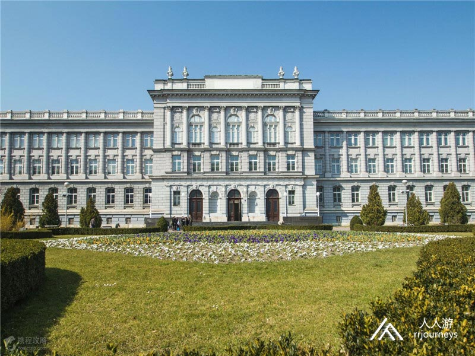
DAY 2：萨格勒布-扎达尔
入住地点：扎达尔
扎达尔是克罗地亚的第五大城市，是扎达尔县和北达尔马提亚地区的行政中心，东南欧著名的旅游胜地之一。它被誉为治愈之城，伴着最美的日落，听最美的音乐，看最美的景。
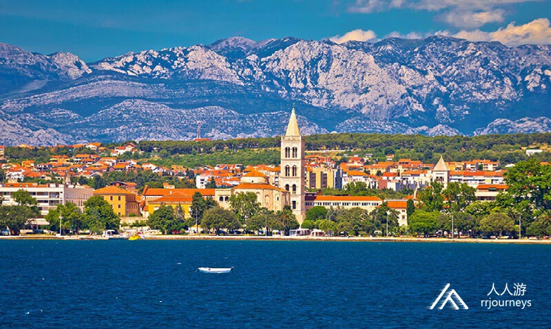
景点：海风琴
海风琴是世上独一无二的阶梯海浪风琴。工人用35根口径各异，长短不一的管子被平行植入海中，长约70米。每当海浪涌入管中就会奏出不同的声调和音符，全年无休的演奏音乐。2006年，海风琴获得欧洲城市公共空间奖。
可爱的小港，充满历史感的小城。当海水涨到合适的水位，静心倾听，大海正在为你奏响一首奇妙的乐曲。
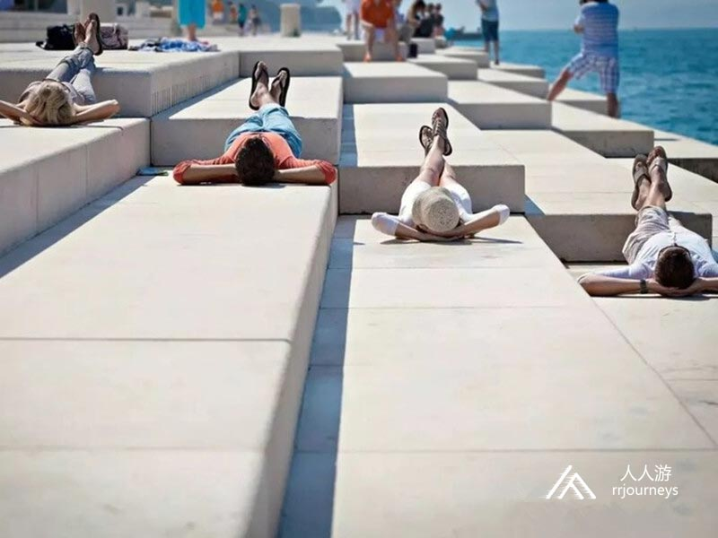
景点：圣多纳图斯教堂
圣多纳图斯教堂是位于克罗地亚城市扎达尔的一座教堂。教堂最早的名称是圣三一教堂，9世纪建成，15世纪重修，并改名为圣多纳图斯教堂。它有着圆形的外观，也是扎尔达最杰出的标志，在城内现存的14座教堂中享有特殊地位。
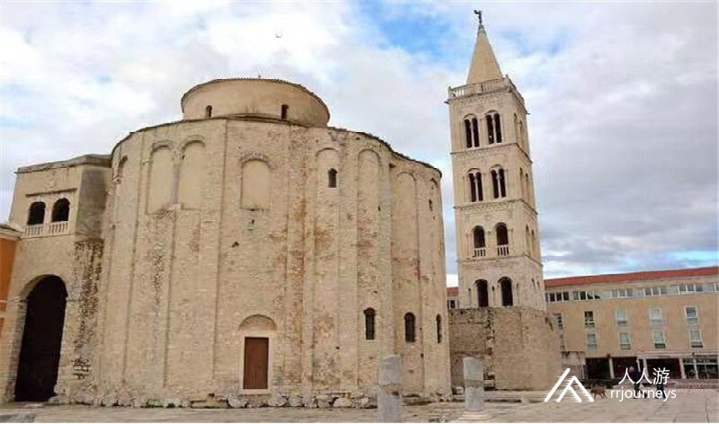
景点：人民广场
人民广场当地标志性的古老广场，周围环绕着 11 世纪的教堂和一些其他有趣的历史建筑，以及一些咖啡馆，是城市里最热闹的地方。
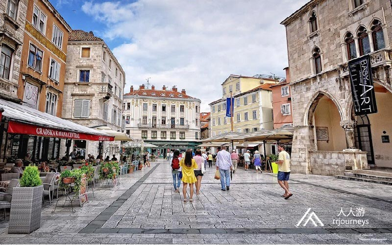
景点：扎达尔主教座堂
扎达尔主教座堂是罗马天主教的教堂，正式名称圣阿纳斯塔西亚主教座堂。它不仅是天主教扎达尔总教区的主教座堂，也是达尔马提亚地区最大的教堂。现在扎达尔主教座堂被列入联合国教科文组织的世界文化遗产暂定名单之中。
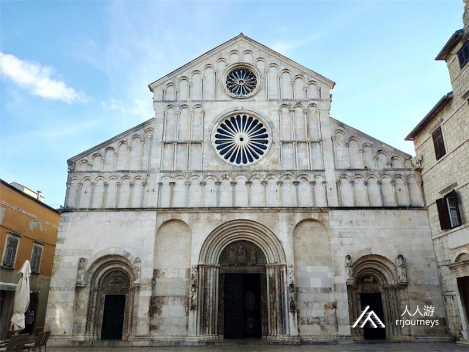
景点：扎达尔市场
扎达尔市场有新鲜的水果和蔬菜，奶酪店，精致的蕾丝和亚麻布，工艺品等。每个人都非常友好和乐于助人，游客可以充分感受到当地人的饮食及文化。
景点：陆地之门
陆地之门是当地引人注目的建筑，由威尼斯建筑师于1543年建造的。它被认为是扎达尔文艺复兴时期最好的纪念碑之一，也是现今扎达尔老城最美丽，保存最完好的大门。拱门上方有飞天圣马可石狮子的雕像。
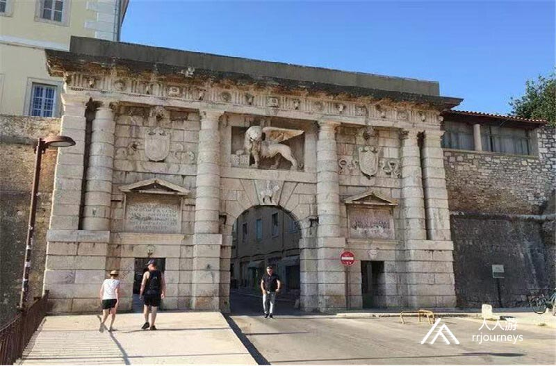
景点：向太阳致敬
扎达尔的海上落日无疑是世界上最美的景象之一。海风琴设计取得成功以后，扎达尔人再接再厉，又一次与大自然携手，推出了一个新的大型艺术作品“向太阳致敬”。这一次，他们挑选的艺术家是阳光。 “向太阳致敬”是一个直径为22米的可踏玻璃大圆盘，安装在海风琴附近的海滨大理石平台地面上。在玻璃下面是300片光伏电池板。将白天接收的阳光转换成电能储存起来，以便黄昏以后将储蓄的电能驱动10000支光电管发出五彩光。在电脑系统的调控下，这些光电管可以组成不同的图像和画面，并根据古老的圣格里索格太阳历，在地面上的36个阳光投影的位置，轮流拼出扎达尔历史上的36位古代圣贤的名字。 黄昏时分，人们聚集在“向太阳致敬”的玻璃盘上，眺望着徐徐落入大海的夕阳。夜幕悄然降落，天空变暗了，阳光却通过光电转换从脚下升华而起，不远的地方，海浪弹奏起低沉悠长的永恒旋律，让人感觉像是在光海里波动，在梦幻中游走，随着辉煌的落日融入无垠的大海。
DAY 3：扎达尔-斯普利特
入住地点：斯普利特
斯普利特
斯普利特是克罗地亚第二大城市，也是达尔马提亚地区第一大海港，疗养和游览胜地。蔚蓝的大海，白色的帆船，这里的一切都是如此美好！
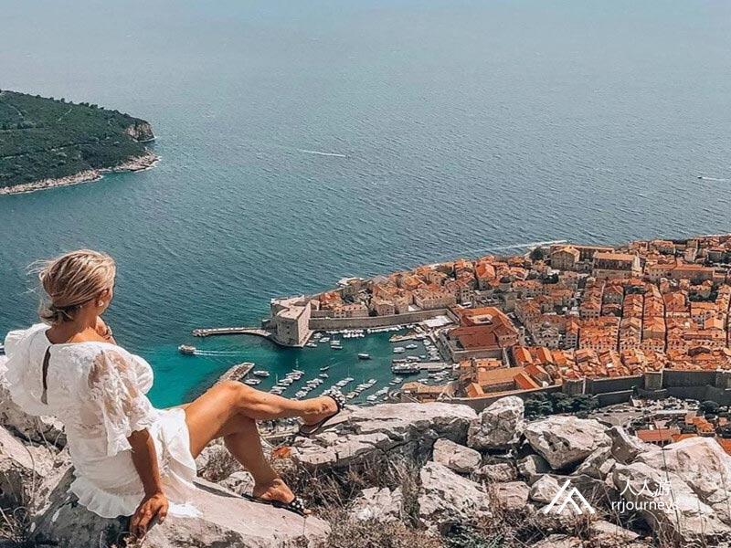
景点：戴克里先宫
戴克里先宫是罗马帝国皇帝戴克里先退位后居住的宫殿，很有罗马帝国君主专制强化的特色，取城堡形制，建筑方整严密。曾经的酒窖和地窖成为了如今的博物馆和集市，其余部分与斯普利特老城融为一体。走进这里，里里外外都能让你感觉踏入了电影世界。
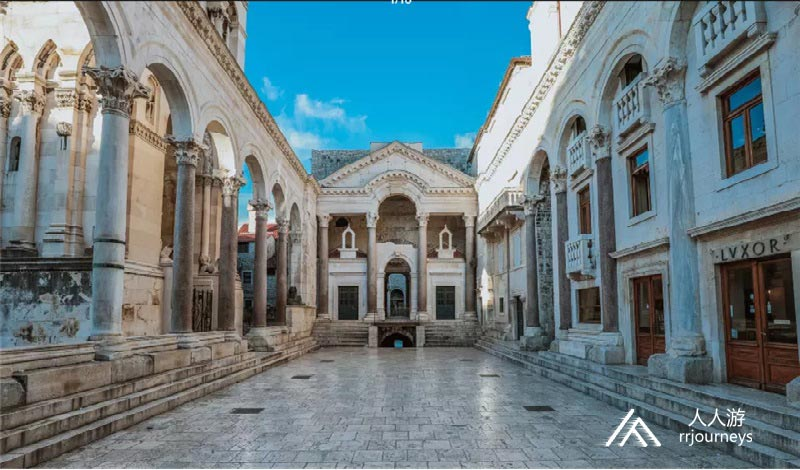
景点：斯普利特主教座堂
斯普利特主教座堂是位于克罗地亚城市斯普利特的一座罗马天主教的教堂，也是天主教斯普利特-马卡尔斯卡总教区的主教座堂。教堂外观为罗马式建筑。教堂的结构本身修建于公元305年，是世界上所有基督教主教座堂中第二古老的。
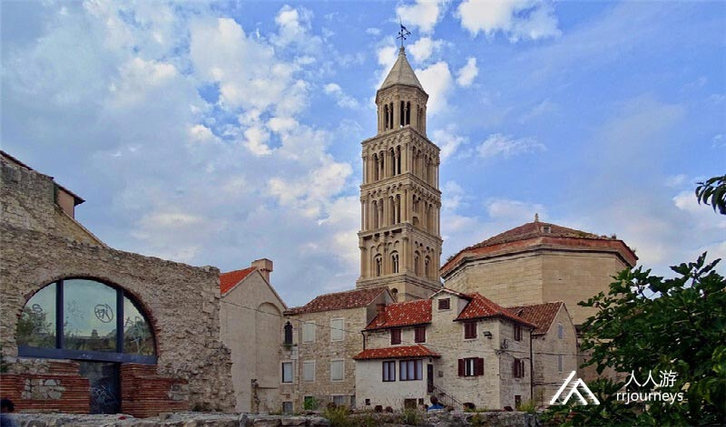
景点：朱庇特神庙
朱庇特神庙是克罗地亚斯普利特的一个神庙，供奉古罗马主神朱庇特。它位于戴克里先宫的西部，靠近建筑群的中央广场的列柱中庭。它建于295-305年，神庙入口前是戴克里先皇帝从埃及带来的十二个斯芬克斯之一。苏格兰建筑师罗伯特•亚当认为该神庙是欧洲最美的古迹之一。
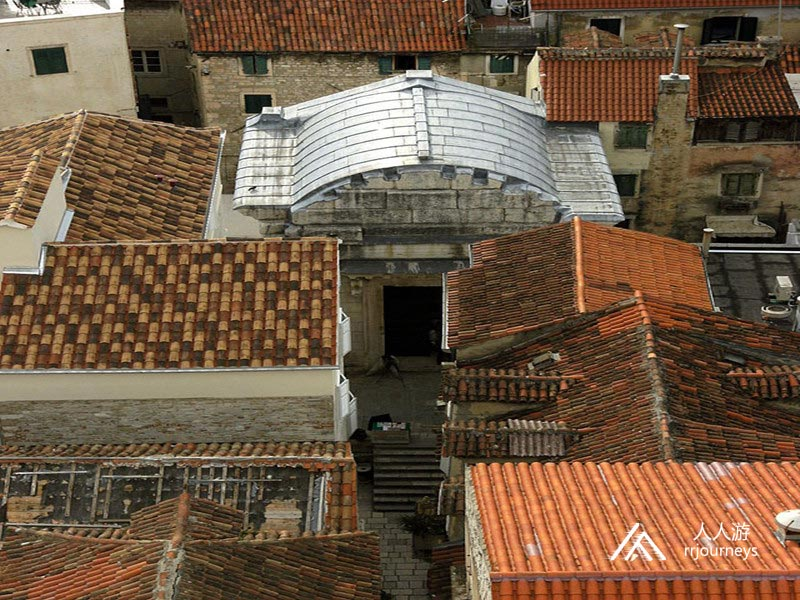
景点：海滨 海滨是斯普利特的海滨大道，是极为热闹的地方，整条街都是咖啡厅、酒店、餐馆。不管白天还是夜晚，都是聊天、吹海风，体验当地文化及美景的休闲处。
景点：马里安山公园
马里安山是斯普利特半岛上的一座小山,高178米,可以欣赏到整个城市、周围的岛屿以及附近的莫索尔和科扎亚克山脉。它被覆盖在茂密的地中海松树林中，完全被城市和大海包围，使其成为独特的景观。它被市民作为公园使用，是一个受欢迎的周末短途旅游目的地和城市休闲中心。
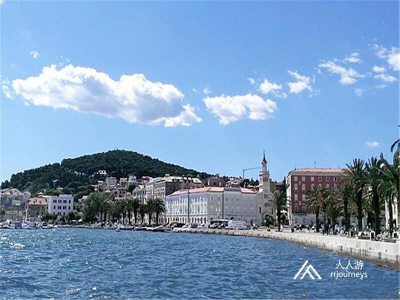
DAY 4：斯普利特-普利特维采湖群国家公园
入住地点：普利特维采湖群国家公园附近
景点：普利特维采湖群国家公园
普利特维采湖群国家公园，位于克罗地亚中部的喀斯特山区，直到1949年才被确立为国家公园，该园为东南欧历史最悠久的国家公园，现在也是克罗地亚最大的国家公园。公园内有许多有石灰岩沉积形成的天然堤坝，这些堤坝又形成了一个个湖泊、洞穴和瀑布。由于主要有16个湖泊，故公园又叫十六湖国家公园。 该景点被评为世界自然遗产，号称欧洲的“九寨沟”。这里少了嘈杂拥挤的游客，没有随处可见的商人，唯有风景独美。
DAY 5：普利特维采湖群国家公园-瓦拉日丁
入住地点：瓦拉日丁
瓦拉日丁
瓦拉日丁是一座以巴洛克建筑为特色的美丽小城，红顶白墙，让人愉悦。
它位于克罗地亚西北部的一个城市，在克罗地亚首都萨格勒布以北81公里处，是瓦拉日丁县的首府所在地。以巴洛克建筑、纺织业、食品业和IT行业而闻名。
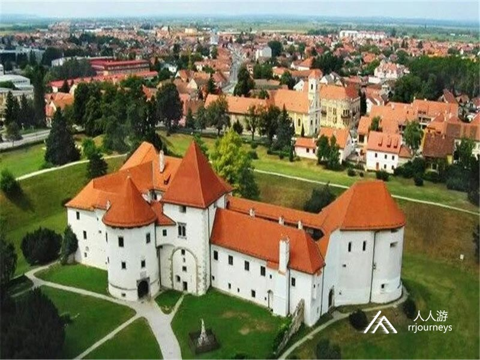
景点：瓦拉日丁老城区
瓦拉日丁的老城中心是市内最热闹的区域，建有市政厅、教堂、广场、贵族府邸（多建于瓦拉日丁18世纪最兴盛的时候）以及数不清的餐厅与咖啡厅。
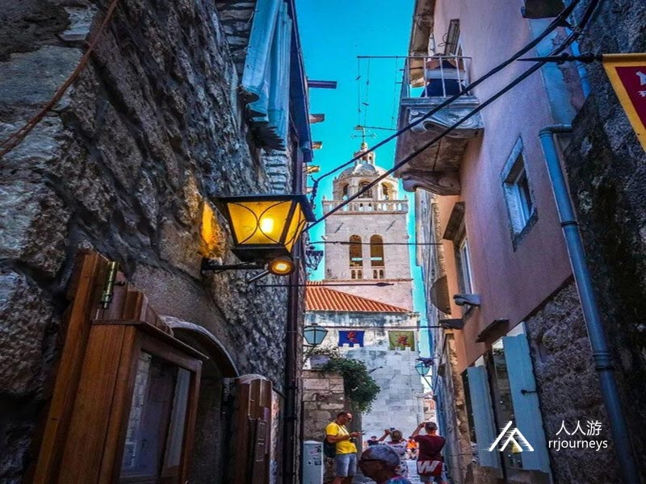
景点：特拉科什恰恩城堡
特拉科什恰恩城堡是位于克罗地亚北部的一座城堡，其历史可以追溯至13世纪，经历过岁月的洗礼保存至今。在18世纪后期，该城堡一度废弃，直到19世纪中期才恢复，现在这座城堡由克罗地亚政府所有。其独特的建筑特点是12和13世纪罗马式城堡。城堡里珍藏着许多巴洛克式家具以及各种15到19世纪使用的武器等。
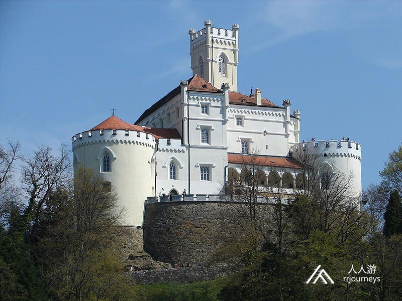
景点：瓦拉日丁主教堂
瓦拉日丁主教堂，建成于1656年。其主立面以粉色为底，共有6个殿，每面的3个殿中都藏有珍贵的宗教画作；主殿中央为玛利亚升天像，附有长期资助教堂修建的德拉斯科维奇家族的徽章。该教堂目前是一年一度的巴洛克音乐节的举办地。
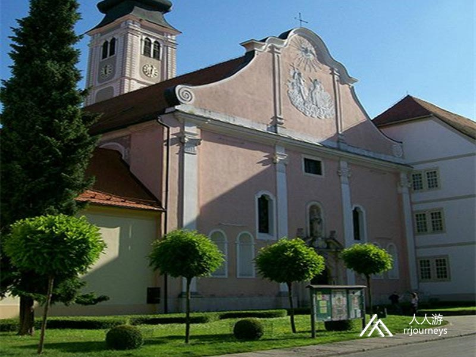
景点：圣尼古拉斯教堂
圣尼古拉斯教堂是位于克罗地亚的一座塞尔维亚正教会的教堂，教堂竣工于1787年。
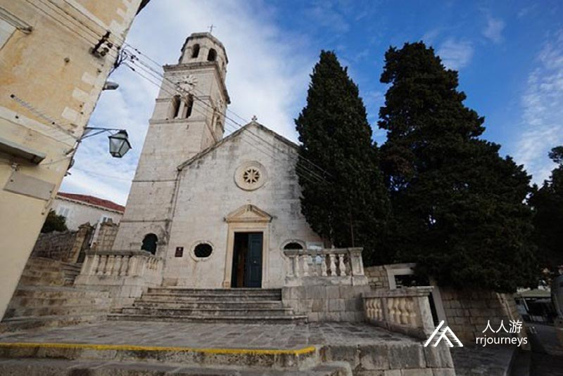
DAY 6：瓦拉日丁-查科韦茨
返回布达佩斯
查科韦茨
查科韦茨是绝对风景优美的小众地，特色的教堂、城堡，让人流连忘返。
它位于克罗地亚北部的城市，距首都萨格勒布以北90公里，查科韦茨是梅吉穆列县最大的都市。
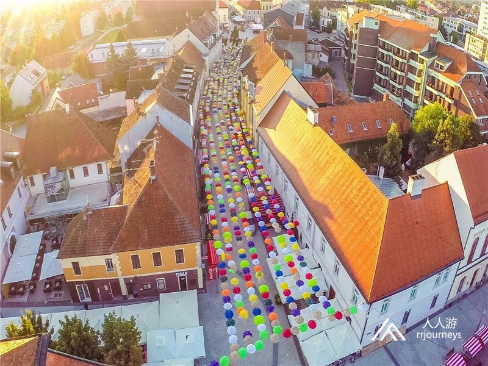
景点：查科韦茨城堡
查科韦茨城堡是克罗地亚北部城市查科韦茨的一座中世纪城堡。城堡位于日林斯基公园，距市中心广场不远。2007年11月19日，查科韦茨城堡被列入克罗地亚登记文化保护建筑。
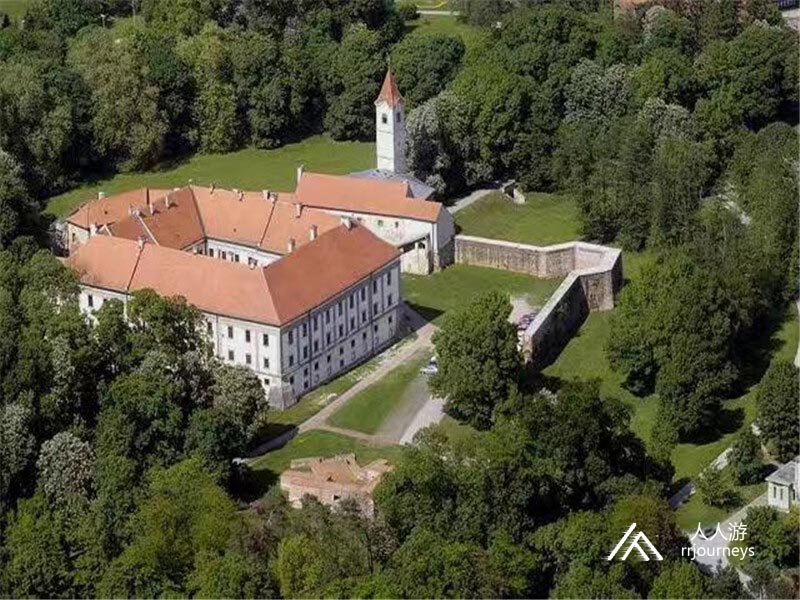
景点：兹林斯基公园
兹林斯基公园位于克罗地亚北部的查科韦茨市中心，靠近中央广场。 自13世纪以来，该地区一直是城市要塞的一部分。16至18世纪之间由兹林斯基家族所有。今天被称为“兹林斯基斯老城”，是当地重要的地标。
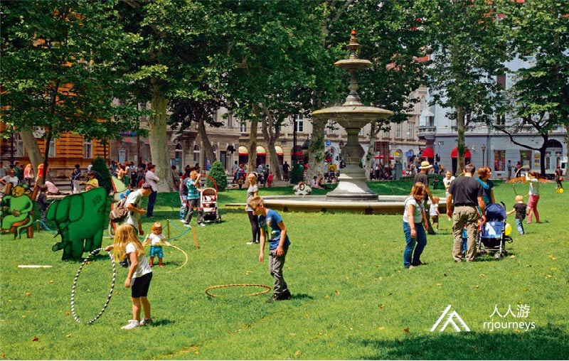
景点：费斯特蒂奇城堡
费斯特蒂奇城堡位于克罗地亚北部，查科韦茨附近的城堡。这座城堡估计修建于16世纪，由日林斯基家族所有至17世纪。1870年，城堡进行了重建。现在这座城堡是小学校的校舍。
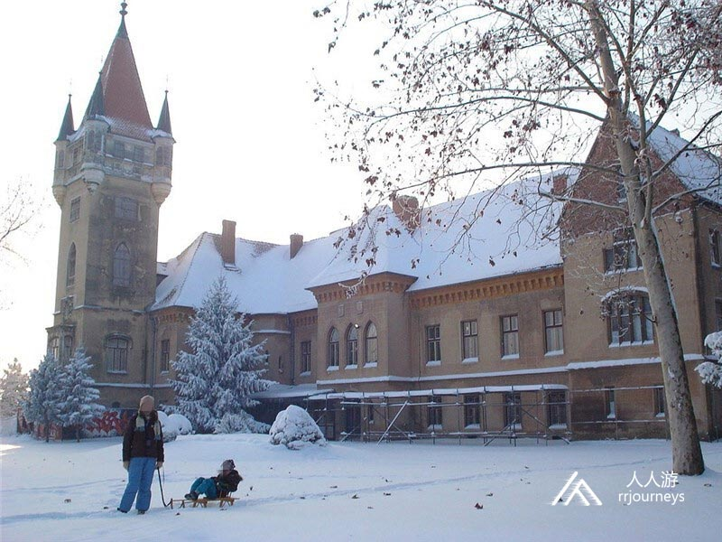
Croatia: Where Your Mediterranean Fantasies Turn into Reality
Croatia is a country of dramatic mountainous landscapes and dreamy deep-blue seascapes. Croatia's extraordinary island-speckled coastline is indisputably its main attraction. The first thing that strikes you is the remarkable clarity of the water. Shift your gaze for just a moment from the glittering waters and chances are an almighty mountain will loom into view. The Dinaric Range, which stretches all the way from Italy to Albania, hugs much of the coast. The limestone karst has bequeathed a wonderland of craggy peaks, caverns, river canyons, waterfalls and ridiculously picturesque lakes. Head further inland and things flatten out again into rolling farmland. But don’t only feast your eyes on this… Croatian wines and olive oils are making their mark on the world stage, garnering top awards.
时间
地点
景点（可以 +/- ）
入住地点
第一天
布达佩斯出发
344公里
萨格勒布
Zagreb
克罗地亚
萨格勒布大教堂, 植物园, 马克西米公园, 警示塔, 失恋博物馆, 圣马尔谷教堂, 米马拉博物馆
第二天
286公里
扎达尔
Zadar
海风琴, 圣多纳图斯教堂, 人民广场, 扎达尔主教座堂, 扎达尔市场, 陆地之门，向太阳致敬
第三天
158公里
Split
戴克里先宫, 斯普利特主教座堂, 朱庇特神庙, Riva, 马里安山
第四天
258公里
普利特维采湖群国家公园
Plitvička Jezera
第五天
220公里
Varaždin
瓦拉日丁老城区, 特拉科什恰恩城堡, 瓦拉日丁主教堂,圣尼古拉斯教堂,bishop, seoski turizam "Grešna pilnica”
第六天
17公里
260公里到布达佩斯
查科韦茨 (Čakovec)
查科韦茨城堡, Zrinski公园, Trgovački kasino, Church of St.. Bishop Nicholas, 费斯特蒂奇城堡
-